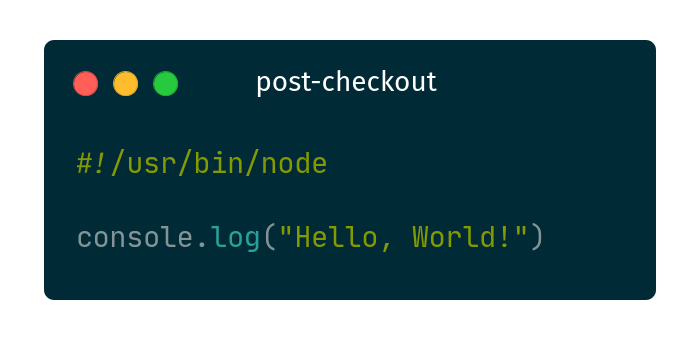

<!DOCTYPE html>
<html lang="en">
  <head>
    <meta charset="utf-8" />
    <meta name="viewport" content="width=device-width, initial-scale=1.0, maximum-scale=1.0, user-scalable=no" />

    <title>Git Hooks</title>
    <link rel="stylesheet" href="../assets/dist/reveal.css" />
    <link rel="stylesheet" href="../assets/dist/theme/simple.css" id="theme" />
    <link rel="stylesheet" href="../assets/plugin/highlight/zenburn.css" />
	<link rel="stylesheet" href="../assets/css/layout.css" />
	<link rel="stylesheet" href="../assets/plugin/customcontrols/style.css">
	<link rel="stylesheet" href="../assets/plugin/chalkboard/style.css">


    <script defer src="../assets/dist/fontawesome/all.min.js"></script>

	<script type="text/javascript">
		var forgetPop = true;
		function onPopState(event) {
			if(forgetPop){
				forgetPop = false;
			} else {
				parent.postMessage(event.target.location.href, "app://obsidian.md");
			}
        }
		window.onpopstate = onPopState;
		window.onmessage = event => {
			if(event.data == "reload"){
				window.document.location.reload();
			}
			forgetPop = true;
		}

		function fitElements(){
			const itemsToFit = document.getElementsByClassName('fitText');
			for (const item in itemsToFit) {
				if (Object.hasOwnProperty.call(itemsToFit, item)) {
					var element = itemsToFit[item];
					fitElement(element,1, 1000);
					element.classList.remove('fitText');
				}
			}
		}

		function fitElement(element, start, end){

			let size = (end + start) / 2;
			element.style.fontSize = `${size}px`;

			if(Math.abs(start - end) < 1){
				while(element.scrollHeight > element.offsetHeight){
					size--;
					element.style.fontSize = `${size}px`;
				}
				return;
			}

			if(element.scrollHeight > element.offsetHeight){
				fitElement(element, start, size);
			} else {
				fitElement(element, size, end);
			}		
		}


		document.onreadystatechange = () => {
			fitElements();
			if (document.readyState === 'complete') {
				if (window.location.href.indexOf("?export") != -1){
					parent.postMessage(event.target.location.href, "app://obsidian.md");
				}
				if (window.location.href.indexOf("print-pdf") != -1){
					let stateCheck = setInterval(() => {
						clearInterval(stateCheck);
						window.print();
					}, 250);
				}
			}
	};


        </script>
  </head>
  <body>
    <div class="reveal">
      <div class="slides"><section  data-markdown><script type="text/template"><!-- .slide: class="drop" -->
<div class="" style="position: absolute; left: 0px; top: 0px; height: 540px; width: 960px; min-height: 540px; display: flex; flex-direction: column; align-items: center; justify-content: center" absolute="true">

# git hooks
### Task automation for your repos

<br></br>

_Jordan Duabe_ |
<i class="fab fa-mastodon fa-xs"></i>
_&#64;jordan&#64;jduabe.dev_ <!-- .element: style="font-size: 1.4rem" -->
<i class="fab fa-github fa-xs"></i>
_&#64;j4ckofalltrades_ <!-- .element: style="font-size: 1.4rem" -->
</div></script></section><section  data-markdown><script type="text/template"><!-- .slide: class="drop" -->
<div class="" style="position: absolute; left: 0px; top: 0px; height: 540px; width: 960px; min-height: 540px; display: flex; flex-direction: column; align-items: center; justify-content: center" absolute="true">

## Agenda

- Conceptual overview
- Common use-cases and tooling
- Practical example: Enforcing code style
- Tips
</div></script></section><section  data-markdown><script type="text/template"><!-- .slide: class="drop" -->
<div class="" style="position: absolute; left: 0px; top: 0px; height: 540px; width: 960px; min-height: 540px; display: flex; flex-direction: column; align-items: center; justify-content: center" absolute="true">

## git hooks

Scripts that are triggered whenever certain events happen in `git` repositories.
</div></script></section><section  data-markdown><script type="text/template"><!-- .slide: class="drop" -->
<div class="" style="position: absolute; left: 0px; top: 0px; height: 540px; width: 960px; min-height: 540px; display: flex; flex-direction: column; align-items: center; justify-content: center" absolute="true">

## Sample: `post-checkout`


</div></script></section><section  data-markdown><script type="text/template"><!-- .slide: class="drop" -->
<div class="" style="position: absolute; left: 0px; top: 0px; height: 540px; width: 960px; min-height: 540px; display: flex; flex-direction: column; align-items: center; justify-content: center" absolute="true">

## Requirements

- the name of the script matches the event e.g. `pre-commit`
- the script is executable
- the script is located where git looks for hooks
</div></script></section><section  data-markdown><script type="text/template"><!-- .slide: class="drop" -->
<div class="" style="position: absolute; left: 0px; top: 0px; height: 540px; width: 960px; min-height: 540px; display: flex; flex-direction: column; align-items: center; justify-content: center" absolute="true">

## Installation

The default location is in the `.git/hooks` directory in your repository.


</div></script></section><section  data-markdown><script type="text/template"><!-- .slide: class="drop" -->
<div class="" style="position: absolute; left: 0px; top: 0px; height: 540px; width: 960px; min-height: 540px; display: flex; flex-direction: column; align-items: center; justify-content: center" absolute="true">

## Customization

<div class="callout callout-color1">
<div class="callout-title">
<div class="callout-icon">

<i class="fas fa-info-circle" ></i>


</div>
<div class="callout-title-inner">

Tell git where your hooks are located

</div>
</div>
<div class="callout-content">

`git config core.hooksPath /path/to/your/hooks`

</div>
</div>
</div></script></section><section  data-markdown><script type="text/template"><!-- .slide: class="drop" -->
<div class="" style="position: absolute; left: 0px; top: 0px; height: 540px; width: 960px; min-height: 540px; display: flex; flex-direction: column; align-items: center; justify-content: center" absolute="true">

## Pick a scripting language

<split even >





</split>
</div></script></section><section  data-markdown><script type="text/template"><!-- .slide: class="drop" -->
<div class="" style="position: absolute; left: 0px; top: 0px; height: 540px; width: 960px; min-height: 540px; display: flex; flex-direction: column; align-items: center; justify-content: center" absolute="true">

## Client & Server-Side Hooks

| Client-Side   | Server-Side  |
| ------------- | ------------ |
| post-checkout | pre-receive  |
| pre-commit    | update       |
| pre-push      | post-receive |
</div></script></section><section  data-markdown><script type="text/template"><!-- .slide: class="drop" -->
<div class="" style="position: absolute; left: 0px; top: 0px; height: 540px; width: 960px; min-height: 540px; display: flex; flex-direction: column; align-items: center; justify-content: center" absolute="true">

## Common use-cases
</div></script></section><section  data-markdown><script type="text/template"><!-- .slide: class="drop" -->
<div class="" style="position: absolute; left: 0px; top: 0px; height: 540px; width: 960px; min-height: 540px; display: flex; flex-direction: column; align-items: center; justify-content: center" absolute="true">

## Automatically install dependencies

<div class="callout callout-color8">
<div class="callout-title">
<div class="callout-icon">

<i class="fas fa-list" ></i>


</div>
<div class="callout-title-inner">

Demo: auto install

</div>
</div>
<div class="callout-content">

`post-checkout` hook running `npm install` if `node_modules` does not exist

</div>
</div>
</div></script></section><section  data-markdown><script type="text/template"><!-- .slide: class="drop" -->
<div class="" style="position: absolute; left: 0px; top: 0px; height: 540px; width: 960px; min-height: 540px; display: flex; flex-direction: column; align-items: center; justify-content: center" absolute="true">

## Formatting of commit messages

<div class="callout callout-color8">
<div class="callout-title">
<div class="callout-icon">

<i class="fas fa-list" ></i>


</div>
<div class="callout-title-inner">

Demo: format commit message

</div>
</div>
<div class="callout-content">

`prepare-commit-msg` hook including the current branch name in the commit message

</div>
</div>
</div></script></section><section  data-markdown><script type="text/template"><!-- .slide: class="drop" -->
<div class="" style="position: absolute; left: 0px; top: 0px; height: 540px; width: 960px; min-height: 540px; display: flex; flex-direction: column; align-items: center; justify-content: center" absolute="true">

## Enforcing code style

Most projects will use _linter_ and _formatter_.

_Linters_ analyzes and detects common errors in your code.

_Formatters_ restructures how code appears.
</div></script></section><section  data-markdown><script type="text/template"><!-- .slide: class="drop" -->
<div class="" style="position: absolute; left: 0px; top: 0px; height: 540px; width: 960px; min-height: 540px; display: flex; flex-direction: column; align-items: center; justify-content: center" absolute="true">

## Using `ruff`

```sh
pipx install ruff
ruff check /path/to/code --fix --show-fixes # linter
ruff format /path/to/code                   # formatter
```
</div></script></section><section  data-markdown><script type="text/template"><!-- .slide: class="drop" -->
<div class="" style="position: absolute; left: 0px; top: 0px; height: 540px; width: 960px; min-height: 540px; display: flex; flex-direction: column; align-items: center; justify-content: center" absolute="true">

### `ruff` configuration


</div></script></section><section  data-markdown><script type="text/template"><!-- .slide: class="drop" -->
<div class="" style="position: absolute; left: 0px; top: 0px; height: 540px; width: 960px; min-height: 540px; display: flex; flex-direction: column; align-items: center; justify-content: center" absolute="true">

## Using `eslint` and `prettier`

```sh
npm i --save-dev \
  eslint \
  prettier \
  eslint-config-prettier \
  eslint-plugin-prettier
```
</div></script></section><section  data-markdown><script type="text/template"><!-- .slide: class="drop" -->
<div class="" style="position: absolute; left: 0px; top: 0px; height: 540px; width: 960px; min-height: 540px; display: flex; flex-direction: column; align-items: center; justify-content: center" absolute="true">

### `eslint` and `prettier` configuration


</div></script></section><section  data-markdown><script type="text/template"><!-- .slide: class="drop" -->
<div class="" style="position: absolute; left: 0px; top: 0px; height: 540px; width: 960px; min-height: 540px; display: flex; flex-direction: column; align-items: center; justify-content: center" absolute="true">

## Tooling
</div></script></section><section  data-markdown><script type="text/template"><!-- .slide: class="drop" -->
<div class="" style="position: absolute; left: 0px; top: 0px; height: 540px; width: 960px; min-height: 540px; display: flex; flex-direction: column; align-items: center; justify-content: center" absolute="true">

## Rationale

Scripts should be part of the code -- so that changes are tracked and are accessible to everyone in the team.

Tools like `pre-commit` and `husky` make it easier to manage and maintain git hooks.
</div></script></section><section  data-markdown><script type="text/template"><!-- .slide: class="drop" -->
<div class="" style="position: absolute; left: 0px; top: 0px; height: 540px; width: 960px; min-height: 540px; display: flex; flex-direction: column; align-items: center; justify-content: center" absolute="true">

## `pre-commit`

```sh
pipx install pre-commit # install pre-commit
# add a pre-commit configuration .pre-commit-config.yaml
pre-commit install      # install the git hook scripts
```
</div></script></section><section  data-markdown><script type="text/template"><!-- .slide: class="drop" -->
<div class="" style="position: absolute; left: 0px; top: 0px; height: 540px; width: 960px; min-height: 540px; display: flex; flex-direction: column; align-items: center; justify-content: center" absolute="true">

### `pre-commit` configuration


</div></script></section><section  data-markdown><script type="text/template"><!-- .slide: class="drop" -->
<div class="" style="position: absolute; left: 0px; top: 0px; height: 540px; width: 960px; min-height: 540px; display: flex; flex-direction: column; align-items: center; justify-content: center" absolute="true">

### Customizing `pre-commit`


</div></script></section><section  data-markdown><script type="text/template"><!-- .slide: class="drop" -->
<div class="" style="position: absolute; left: 0px; top: 0px; height: 540px; width: 960px; min-height: 540px; display: flex; flex-direction: column; align-items: center; justify-content: center" absolute="true">

## `husky`

```sh
npm install --save-dev husky
npx husky init               # initializes a .husky/ directory
```
</div></script></section><section  data-markdown><script type="text/template"><!-- .slide: class="drop" -->
<div class="" style="position: absolute; left: 0px; top: 0px; height: 540px; width: 960px; min-height: 540px; display: flex; flex-direction: column; align-items: center; justify-content: center" absolute="true">

### `husky` config

`husky` creates a `.husky` directory where it _installs_ your scripts and tell git about it.


</div></script></section><section  data-markdown><script type="text/template"><!-- .slide: class="drop" -->
<div class="" style="position: absolute; left: 0px; top: 0px; height: 540px; width: 960px; min-height: 540px; display: flex; flex-direction: column; align-items: center; justify-content: center" absolute="true">

## `lint-staged`

```sh
npm install --save-dev lint-staged
# after installation add config in either
# package.json or .lintstagedrc
```
</div></script></section><section  data-markdown><script type="text/template"><!-- .slide: class="drop" -->
<div class="" style="position: absolute; left: 0px; top: 0px; height: 540px; width: 960px; min-height: 540px; display: flex; flex-direction: column; align-items: center; justify-content: center" absolute="true">

### `lint-staged` configuration


</div></script></section><section  data-markdown><script type="text/template"><!-- .slide: class="drop" -->
<div class="" style="position: absolute; left: 0px; top: 0px; height: 540px; width: 960px; min-height: 540px; display: flex; flex-direction: column; align-items: center; justify-content: center" absolute="true">

## Tips

- Prefer the long version of command-line flags
- Convention over configuration / sensible defaults
- Tweak the (lint and format) rules as needed
- Experiment and see what works for you and your team
</div></script></section><section  data-markdown><script type="text/template"><!-- .slide: class="drop" -->
<div class="" style="position: absolute; left: 0px; top: 0px; height: 540px; width: 960px; min-height: 540px; display: flex; flex-direction: column; align-items: center; justify-content: center" absolute="true">

## Repos

<split>
<figure>


<figcaption>pre-commit-ruff-demo</figcaption>
</figure>

<figure>


<figcaption>husky-eslint-demo</figcaption>
</figure>
</split>
</div></script></section><section  data-markdown><script type="text/template"><!-- .slide: class="drop" -->
<div class="" style="position: absolute; left: 0px; top: 0px; height: 540px; width: 960px; min-height: 540px; display: flex; flex-direction: column; align-items: center; justify-content: center" absolute="true">

## Source

<figure>


<figcaption><a href="https://jduabe.dev/git-hooks" target="_blank">jduabe.dev/git-hooks</a></figcaption>
</figure>
</div></script></section></div>
    </div>

    <script src="../assets/dist/reveal.js"></script>

    <script src="../assets/plugin/markdown/markdown.js"></script>
    <script src="../assets/plugin/highlight/highlight.js"></script>
    <script src="../assets/plugin/zoom/zoom.js"></script>
    <script src="../assets/plugin/notes/notes.js"></script>
    <script src="../assets/plugin/math/math.js"></script>
	<script src="../assets/plugin/mermaid/mermaid.js"></script>
	<script src="../assets/plugin/chart/chart.min.js"></script>
	<script src="../assets/plugin/chart/plugin.js"></script>
	<script src="../assets/plugin/menu/menu.js"></script>
	<script src="../assets/plugin/customcontrols/plugin.js"></script>
	<script src="../assets/plugin/chalkboard/plugin.js"></script>

    <script>
      function extend() {
        var target = {};
        for (var i = 0; i < arguments.length; i++) {
          var source = arguments[i];
          for (var key in source) {
            if (source.hasOwnProperty(key)) {
              target[key] = source[key];
            }
          }
        }
        return target;
      }

	  function isLight(color) {
		let hex = color.replace('#', '');

		// convert #fff => #ffffff
		if(hex.length == 3){
			hex = `${hex[0]}${hex[0]}${hex[1]}${hex[1]}${hex[2]}${hex[2]}`;
		}

		const c_r = parseInt(hex.substr(0, 2), 16);
		const c_g = parseInt(hex.substr(2, 2), 16);
		const c_b = parseInt(hex.substr(4, 2), 16);
		const brightness = ((c_r * 299) + (c_g * 587) + (c_b * 114)) / 1000;
		return brightness > 155;
	}

	var bgColor = getComputedStyle(document.documentElement).getPropertyValue('--r-background-color').trim();
	var isLight = isLight(bgColor);

	if(isLight){
		document.body.classList.add('has-light-background');
	} else {
		document.body.classList.add('has-dark-background');
	}

      // default options to init reveal.js
      var defaultOptions = {
        controls: true,
        progress: true,
        history: true,
        center: true,
        transition: 'default', // none/fade/slide/convex/concave/zoom
        plugins: [
          RevealMarkdown,
          RevealHighlight,
          RevealZoom,
          RevealNotes,
          RevealMath.MathJax3,
		  RevealMermaid,
		  RevealChart,
		  RevealCustomControls,
		  RevealMenu,
		  RevealChalkboard,
        ],


    	allottedTime: 120 * 1000,

		mathjax3: {
			mathjax: 'plugin/math/mathjax/tex-mml-chtml.js',
		},
		markdown: {
		  gfm: true,
		  mangle: true,
		  pedantic: false,
		  smartLists: false,
		  smartypants: false,
		},

		mermaid: {
			theme: isLight ? 'default' : 'dark',
		},

		customcontrols: {
			controls: [
				{id: 'toggle-overview',
				title: 'Toggle overview (O)',
				icon: '<i class="fa fa-th"></i>',
				action: 'Reveal.toggleOverview();'
				},
				{ icon: '<i class="fa fa-pen-square"></i>',
				title: 'Toggle chalkboard (B)',
				action: 'RevealChalkboard.toggleChalkboard();'
				},
				{ icon: '<i class="fa fa-pen"></i>',
				title: 'Toggle notes canvas (C)',
				action: 'RevealChalkboard.toggleNotesCanvas();'
				},
			]
		},
		menu: {
			loadIcons: false
		}
      };

      // options from URL query string
      var queryOptions = Reveal().getQueryHash() || {};

      var options = extend(defaultOptions, {"width":960,"height":540,"margin":0.04,"controls":true,"progress":true,"slideNumber":false,"transition":"none","transitionSpeed":"normal"}, queryOptions);
    </script>

    <script>
      Reveal.initialize(options);
    </script>
  </body>

  <!-- created with Advanced Slides -->
</html>
